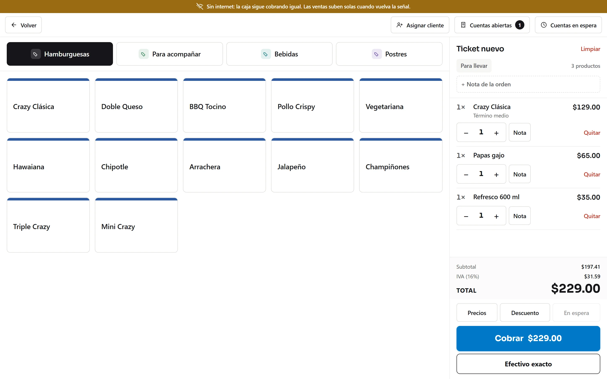
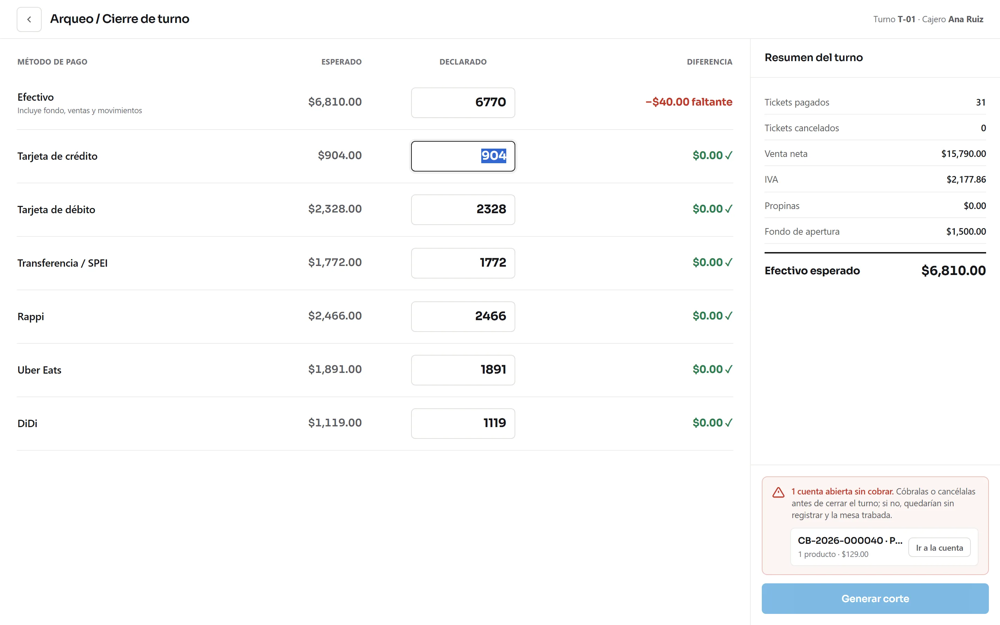

El diferenciador
Se cae el internet y tú sigues cobrando
No es una promesa de folleto: es la diferencia entre que el sistema viva en tu caja o viva en internet. Esta página cuenta qué pasa exactamente cuando se va la señal, qué pasa cuando vuelve y qué hace el sistema si algo se rompe.
La comparación honesta
Contra el que vive en internet y contra el de siempre
Hay dos formas de vender punto de venta en México, y las dos tienen un problema. Los sistemas que viven en internet se detienen cuando se cae la señal. Los sistemas de siempre no se detienen, pero te obligan a ir al local para ver cómo va el día y el respaldo es el que tú te acuerdes de hacer.
| Situación | Punto de venta en internet | El sistema instalado de siempre | VIM POS |
|---|---|---|---|
| Se cae el internet | Se detiene o pasa a apuntar en papel | Sigue vendiendo | Sigue vendiendo |
| Ver cómo va el día sin estar ahí | Sí, desde el celular | No, hay que ir al local | Sí, desde el celular |
| Si se muere la computadora | Tus datos están fuera | El respaldo que hayas hecho tú | Copia diaria en el local y fuera de él |
| Actualizaciones | Solas | Visita del técnico | Solas, sin que nadie vaya |
| Varias sucursales sumadas | Sí | Depende de la versión | Sí, un reporte con todo |
| Dónde vive tu información | Solo fuera | Solo en tu local | En tu local, con copia fuera |
La columna de en medio existe porque es honesta: hay sistemas instalados que tampoco se detienen sin internet. Ahí no ganamos por seguir vendiendo — ganamos por el resto de la tabla.
Por qué funciona
El sistema no está en internet. Está en tu caja.
Un punto de venta en internet es una ventana: lo que ves en pantalla vive en otro lado y cada cobro tiene que viajar hasta allá y volver. Si el camino se corta, la ventana se queda en blanco. Aquí el sistema completo está instalado en la computadora de tu caja, así que el cobro no viaja a ningún lado: se hace ahí mismo.

No es un modo reducido
No hay «versión sin conexión» con la mitad de las cosas apagadas. Es el mismo sistema, con tu menú, tus precios, tus descuentos y tus impuestos, haya señal o no.
Nada se queda a medias
El ticket se cierra, se cobra y se imprime completo en el momento. No queda una venta «pendiente de subir» que puedas perder si se apaga la computadora antes.
La cocina tampoco se entera
Las comandas van de la caja a la impresora y a la pantalla de cocina por la red de tu local. Nunca salen a internet, ni siquiera cuando lo hay.
Cómo se acomoda en tu local
Una computadora manda, las demás cuelgan de ella
La caja principal hace de centro. La pantalla de cocina, las impresoras de las distintas áreas y la segunda caja se conectan a ella por la red del local — el mismo módem que ya tienes, sin salir a internet. Por eso todo el conjunto sigue trabajando cuando la señal se va: nunca dependía de ella.
Cuando vuelve la señal
Sube solo, y sube tal cual quedó
Ésta es la parte donde los sistemas con «modo sin conexión» fallan de verdad: al reconectarse vuelven a numerar los tickets, recalculan totales y te dejan dos folios con el mismo número. Aquí lo que sube es exactamente lo que se imprimió.
-
Vuelve la señal
La caja lo nota sola. Nadie tiene que apretar nada ni volver a entrar.
-
Sube lo del día
Cada pocos minutos manda lo nuevo. Si el internet vuelve a irse a medias, reintenta y espera cada vez un poco más, en lugar de insistir hasta atorarse.
-
Los folios no se tocan
El número de ticket, los totales y el estado de la venta suben tal cual se generaron. No se vuelven a calcular al llegar.
-
Si algo choca, se aparta
Una venta con un problema no detiene a las demás: se aparta sola y la revisas desde el panel cuando puedas.
Si algo falla
Lo que pasa a las once de la noche, cuando no hay a quién llamar
Un sistema que vive en tu local también puede fallar. La diferencia está en si se arregla solo o si tienes que cerrar la caja hasta que llegue alguien.

Se revisa a sí mismo
La caja comprueba cada pocos segundos que todo responda. Si algo se cayó, lo levanta sola y sigue. Nadie del turno de noche tiene que saber qué pasó.
Siete copias, siempre
Guarda una copia completa al cerrar el día y conserva las siete más recientes. Además de la copia fuera del local: si se muere la computadora, no se muere el negocio.
No se apaga por accidente
Si alguien cierra la ventana en plena hora pico, la caja sigue trabajando: se queda junto al reloj de Windows. Para apagarla de verdad hay que decirlo a propósito.
Se actualiza sin visita
Las versiones nuevas llegan solas y se comprueban antes de instalarse, para que lo que entra a tu caja sea lo que mandamos y nada más. No tienes que agendar a un técnico.
Todo lo de esta página lo hace el programa que se instala en la computadora de tu caja, con Windows. Si abres el punto de venta desde el navegador y se cae el internet, te avisa en pantalla, pero ahí no cobra sin conexión.
El panel para ver el negocio desde fuera sí necesita internet, porque está fuera. Que no lo tengas no detiene la caja: solo no ves el reporte hasta que vuelva.
Pruébalo cortándole el internet
Es la demo que pedimos que nos hagas: desconecta el cable delante de nosotros y sigue cobrando. Si no pasa, no compres.